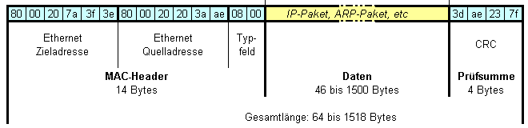
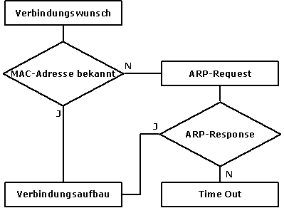

2.3.2 ARP, ICMP
Wir beschreiben hier zwei Protokolle, die um das IP-Protokoll herum operieren. Während das ARP-Protokoll eine Verbindung zwischen den IP-Adressen und den eigentlichen Netzknoten herstellt, liefert das ICMP-Protokoll Informationen über den Zustand des Netzes. Beide Protokolle sind hinsichtlich der Administration wartungsfrei, ihre Erwähnung dient an dieser Stelle also lediglich dem Verständnis.
Ein IP-Paket wird auf seinem Weg vom Sender zum Empfänger auf allen Teilstrecken der Route in Frames verpackt, wobei die Teilstrecken durch Sender, Empfänger und Router begrenzt sind. Die Graphik zeigt den Aufbau eines Frames:

Jeder Router setzt passende Sender- und Empfänger-MAC-Adressen in den Frameheader (MAC-Header). Im Falle eines Routers wird das in der Regel die eigene und die MAC-Adresse des nächsten Routers sein, wobei letztere aus der IP-Adresse gefolgert werden kann. Ein Problem kann es geben, wenn der Sender die MAC-Adresse des Empfängers nicht kennt und deshalb den Frame nicht bauen kann. Hier hilft das ARP-Protokoll.
ARP
Es ist also ein Protokoll notwendig, das zur bekannten IP-Adresse eines Empfängers, dessen MAC-Adresse liefert. Genau das wird vom ARP-Protokoll (address resolution protocol) besorgt. Das ARP operiert wie das IP-Protokoll auf dem OSI-Layer 3 und koppelt also IP-Adressen mit den entsprechenden MAC-Adressen, wobei diese Zuordnungen in einfachen Tabellen gespeichert werden.
Ist ein Paket zu adressieren, so sucht jeder Host zunächst in der eigenen ARP-Tabelle (Address Resolution Cache) nach der gesuchten MAC-Adresse. Im erfolglosen Fall wird ein ARP-Request in Form eines Broadcasts mit der Empfängeradresse FF:FF:FF:FF:FF:FF abgeschickt, der von jedem Host des (Sub)Netzes empfangen wird. Der entsprechende Host schickt dann ein ARP-Reply, das die eigene MAC-Adresse enthält, an den anfragenden Host zurück, der die Adresse in seiner Tabelle speichert. Liegt die MAC-Adresse des Empfängers nicht im Subnetz, wird der ARP-Request vom Gatewayrouter an den Empfänger geleitet, der ein ARP-Reply absetzt.
Die Funktionsweise zeigt auch folgendes Flussdiagramm:

Auch die umgekehrte Vorgangsweise gibt es und zwar als RARP (Reverse ARP). Dabei wird ein RARP-Server verwendet, der alle Zuordnungen im Netz kennt. Die Wartung seiner Adresstabelle erfolgt über RARP-Requests, bei dem ein Host seine MAC-Adresse schickt und im ARP-Response seine IP-Adresse erfährt. Das Verfahren ist dann von Bedeutung, wenn Terminals (diskless workstations) ihre gesamte Software von einem Server downloaden.
ICMP
Das ICMP-Protokoll (Internet Control Message Protocol) ermöglicht auf IP-Ebene das Anfordern und Versenden von Kontrollnachrichten, die die Hosts über den Zustand des Netzes oder einzelner Hosts unterrichten. Es ist im IP-Protokoll implementiert, wenn es auch genau genommen ein ULP (Upper Layer Protokoll) des IP-Protokolls ist. Anzusiedeln ist es wahrscheinlich irgendwo zwischen den OSI-Layern 3 und 4. Die Nachricht selbst ist im Datenteil des IP-Datagramms untergebracht.
Die Nachrichten selbst werden bestimmten Typen zugeordnet, ein Code-Feld liefert allenfalls Näheres. Die folgende Tabelle erläutert die verschiedenen Typen:
| Type | Bedeutung | Erklärung |
| 0 | Echo reply | Testdaten, unverändert retournieren (ping). |
| 3 | Destination unreachable | Die genaue Ursache (Host, Port, Route, uam.) wird mitübertragen. |
| 4 | Source quench | Zeigt an, dass der Host mehr Datagramme erhalten hat, als er verarbeiten kann. |
| 5 | Redirect (Change a Route) | Teilt den Hosts die Adresse des Gateways mit, das eine bessere Route hat. |
| 8 | Echo request | ping |
| 11 | Time exceeded for a datagram | Falls ein Gateway ein Datagramm killt (TTL=0) oder ein Fragment nicht ankommt (Timeout) |
| 12 | Parameter problem on a datagram | Bei Interpretationsproblemen des IP-Headers |
| 13 | Timestamp request | Erlaubt Zeitmessungen und -sychronisation im Netz |
| 14 | Timestamp reply | |
| 15 | Information request | Der Host kann seine NetzID erfragen |
| 16 | Information reply | |
| 17 | Address mask request | Der Host kann seine Subnetzmaske erfragen |
| 18 | Address mask reply |
|
|
|
|